Explore the different facilities and spaces available to support learning, activities, and student life at UECS.
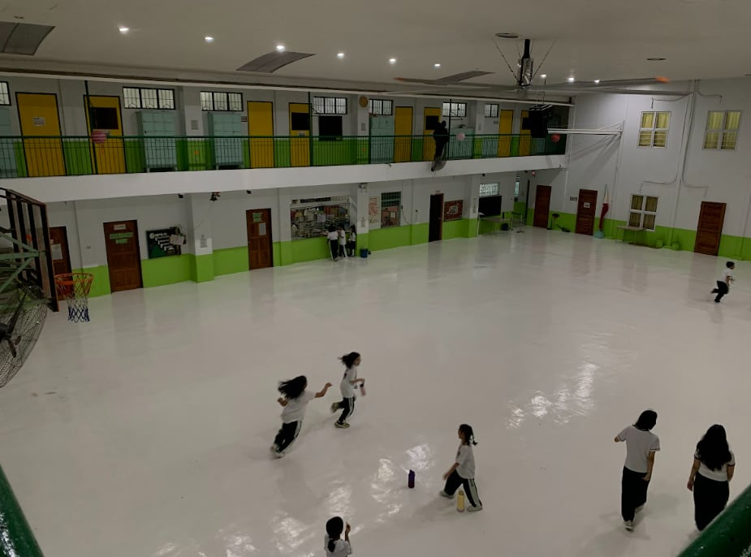
The school gymnasium is used for physical education, sports activities, school programs, and other events.
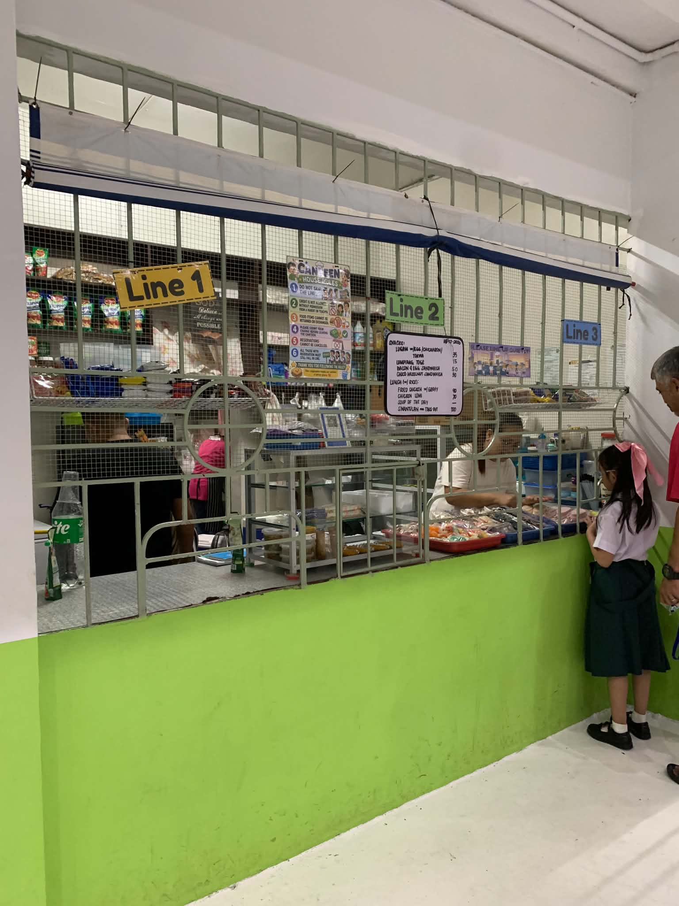
The school canteen provides students and staff with food and refreshments during school hours.
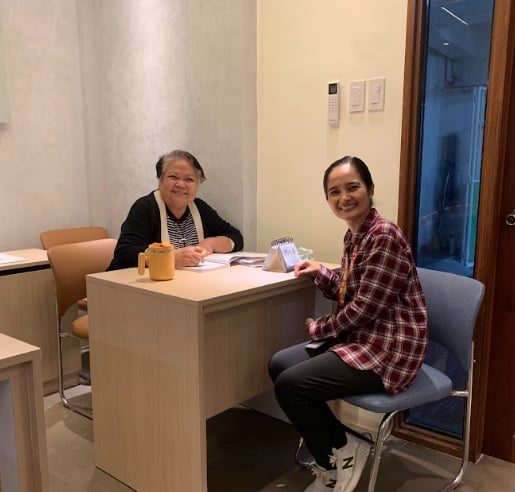
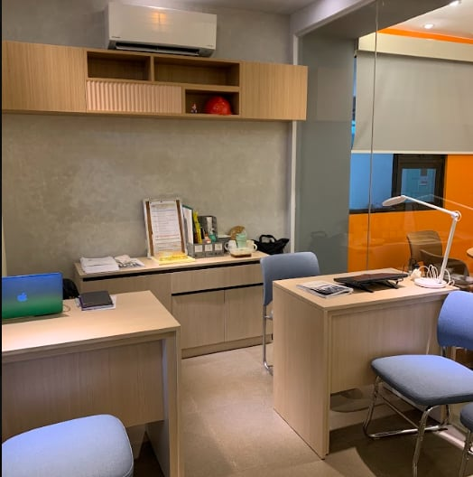
The Guidance Office provides support and assistance to students regarding their academic and personal concerns.
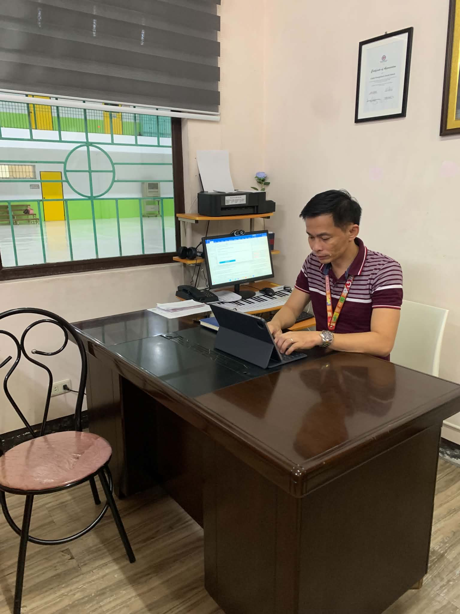
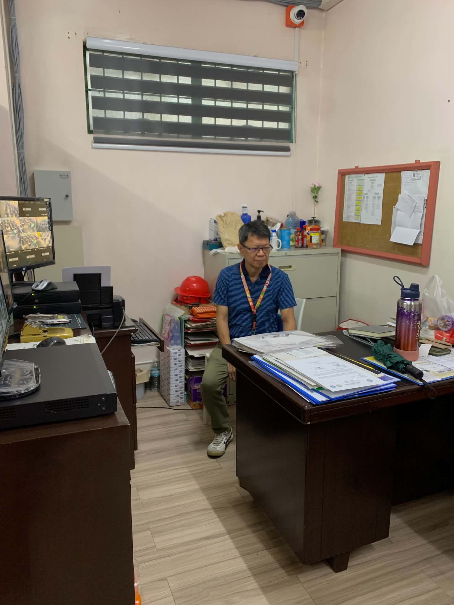
The administration office handles important school matters, records, and other administrative responsibilities.
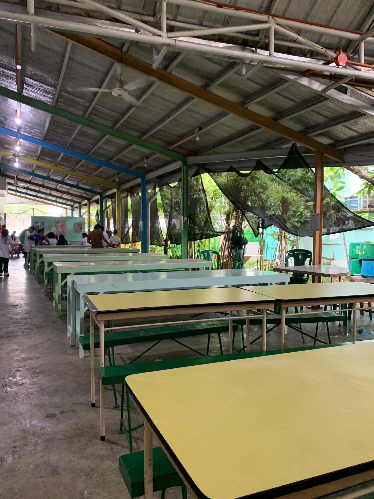
The dining area provides students with a comfortable space where they can eat and spend time during breaks.
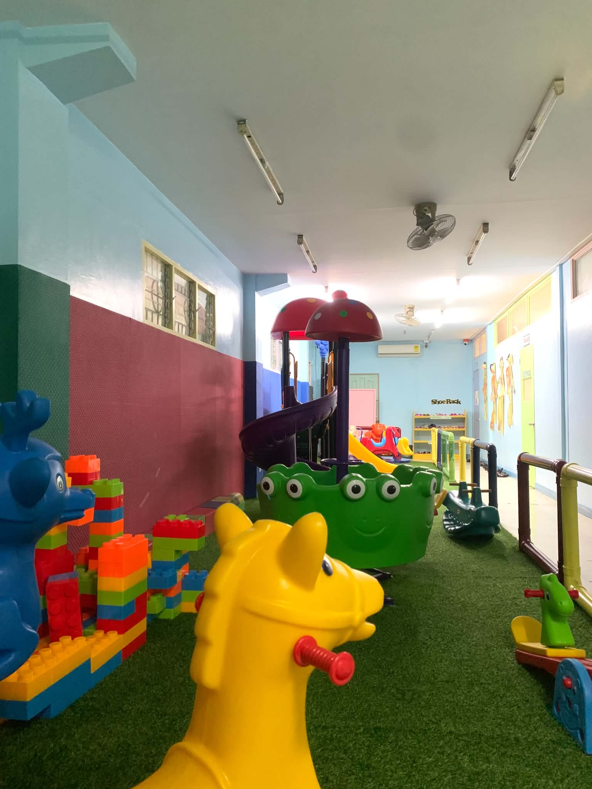
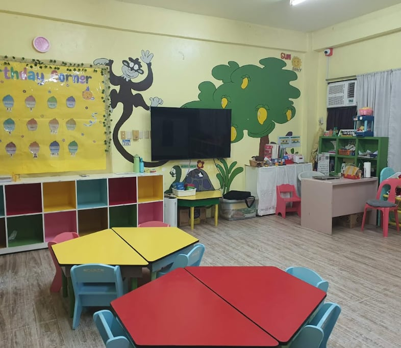
The playground and nursery area provide younger students with a safe space for play, activities, and learning.
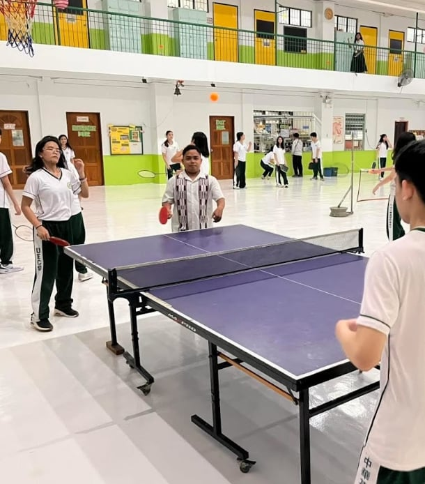
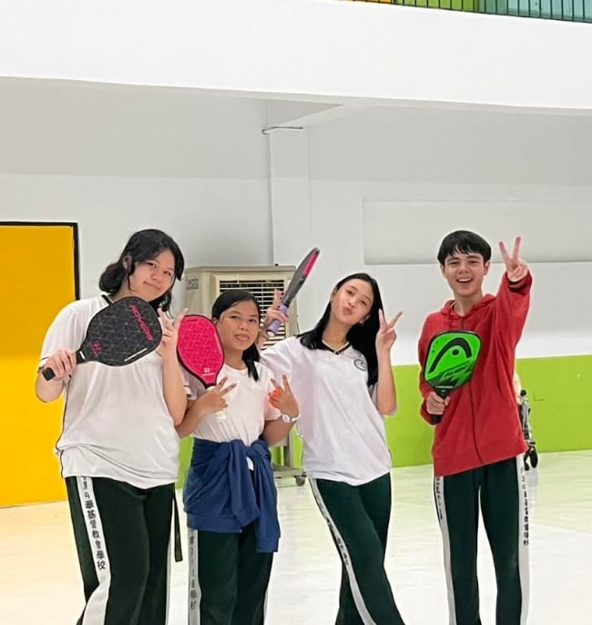
The PE area is used for physical education classes, exercises, sports, and other physical activities.
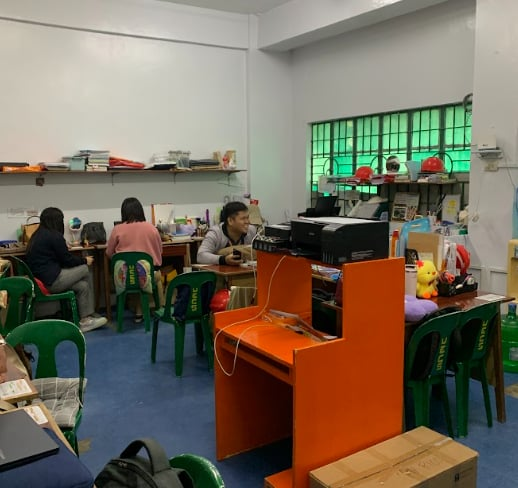
The faculty area provides teachers with a space for preparation, meetings, and other school responsibilities.
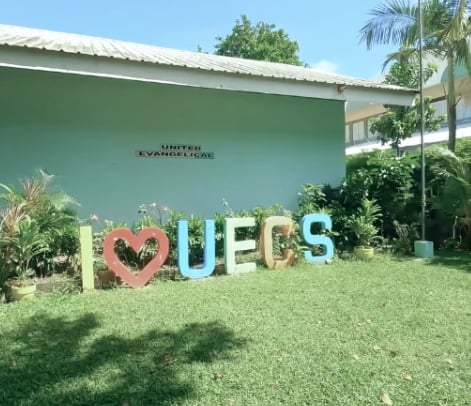
The school garden provides a pleasant environment where students can appreciate nature and the outdoors.
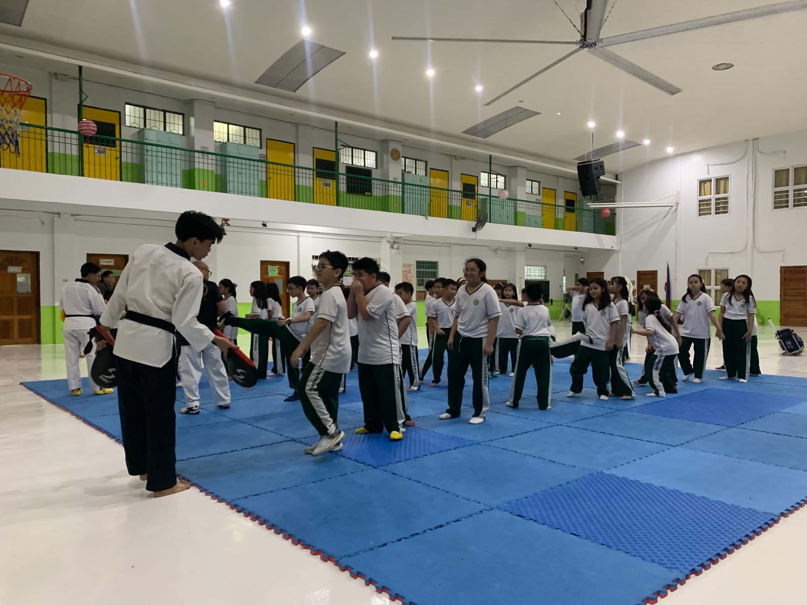
The taekwondo area is used for martial arts training, practice, and physical activities.
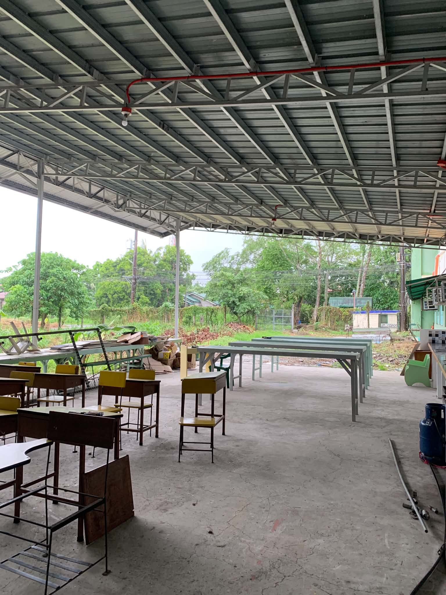
The workshop area provides space for practical activities, projects, and hands-on learning.
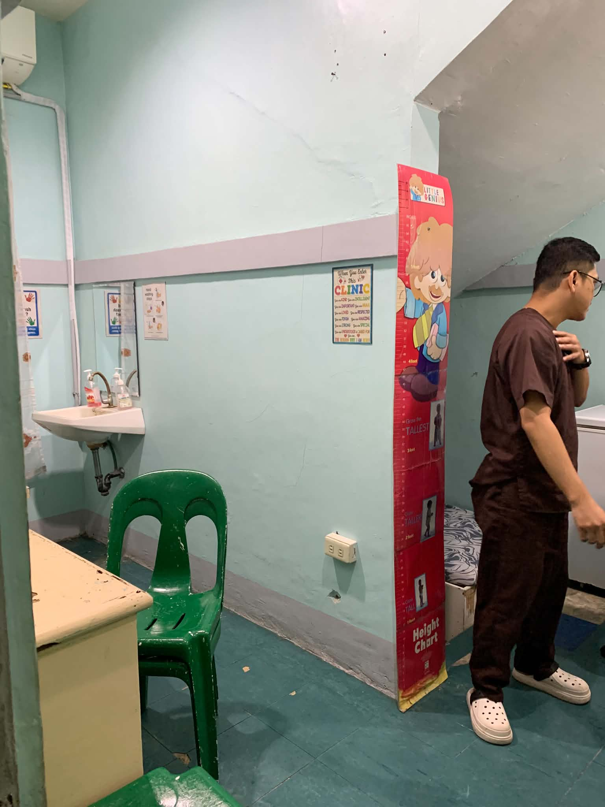
The school clinic provides basic health assistance and support for students and staff when needed.
Every Monday at 7:20 a.m., the school holds a flag ceremony followed by devotion.
Every Thursday at 8:00 a.m., students and staff participate in fellowship.